Section 2: How effective have international institutions been in reducing the use of torture by governments around the world?
Principal-Agent Theory
Hawkins, Lake, Nielson & Tierney (2006). “Delegation Under Anarchy: States, international organizations, and principal-agent theory”
Justin Leinaweaver (Fall 2026)
How effective have international institutions been in reducing the use of torture by governments around the world?
Week 6: Defining and Measuring the Outcome
Week 7: The Convention Against Torture (CAT)
Week 8: Explaining the Effect of the CAT on Torture
Week 9: The International Criminal Court (ICC)
Week 10: Can the ICC help us reduce global torture?
Week 11: Case Studies of ICC Effectiveness
Why would states delegate power to an external agent?
Why would states delegate power to an external agent?
Legalization
(Abbott, Keohane, Moravcsik, Slaughter & Snidal 2000)
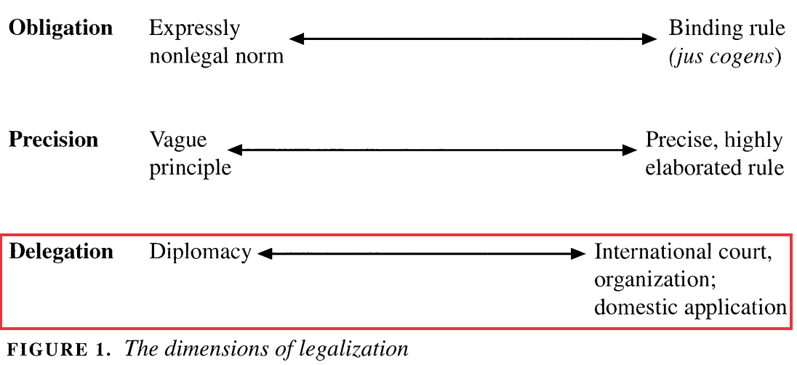
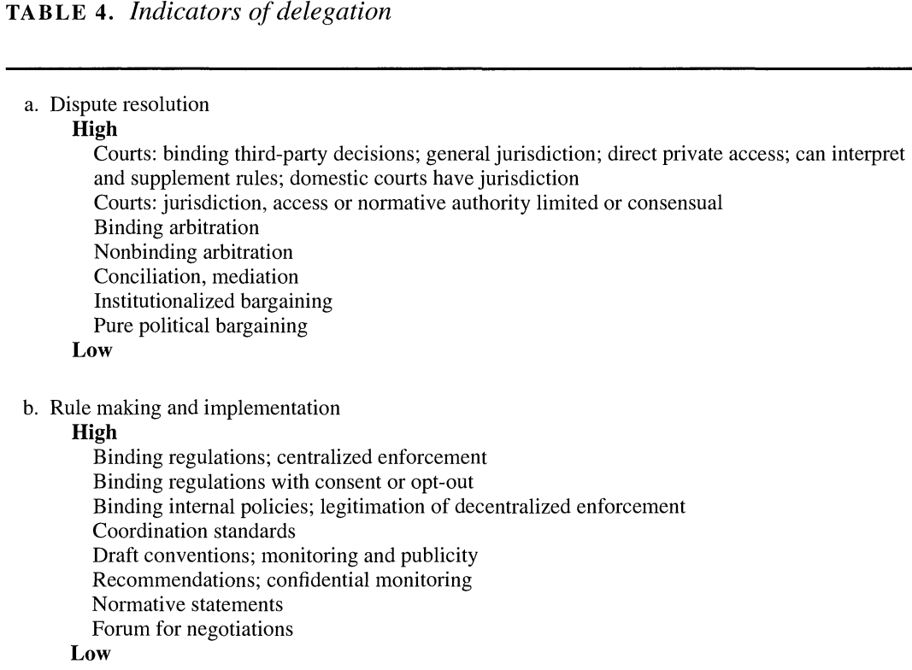
Why would states delegate power to an external agent?
Rational Design
(Koremenos, Lipson & Snidal 2001)
Assumptions
Rational design
Shadow of the future
Transaction costs
Risk aversion
Design Choices
Membership rules
Scope of issues
Centralization of tasks
Rules for control
Flexibility of arrangements
Principal-Agent Theory (Hawkins, Lake, Nielson & Tierney 2006)
“Delegation is a conditional grant of authority from a principal to an agent that empowers the latter to act on behalf of the former” (4).
Always governed by a contract
Limited in time or scope
Must be revocable
Roles are mutually constitutive
Principal-Agent Theory (Hawkins, Lake, Nielson & Tierney 2006)
The Benefits of Delegation
Divide the labor & create gains from specialization
Managing policy externalities
Facilitating collective decision-making
Resolving disputes
Enhancing credibility
Creating policy bias
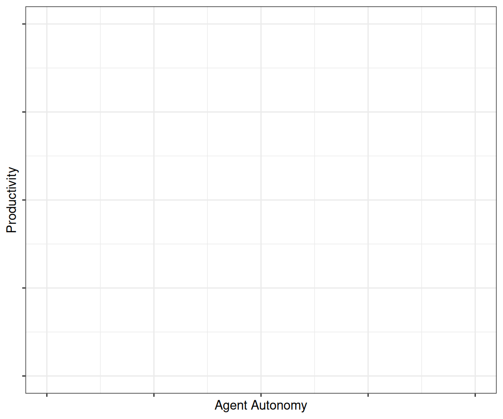
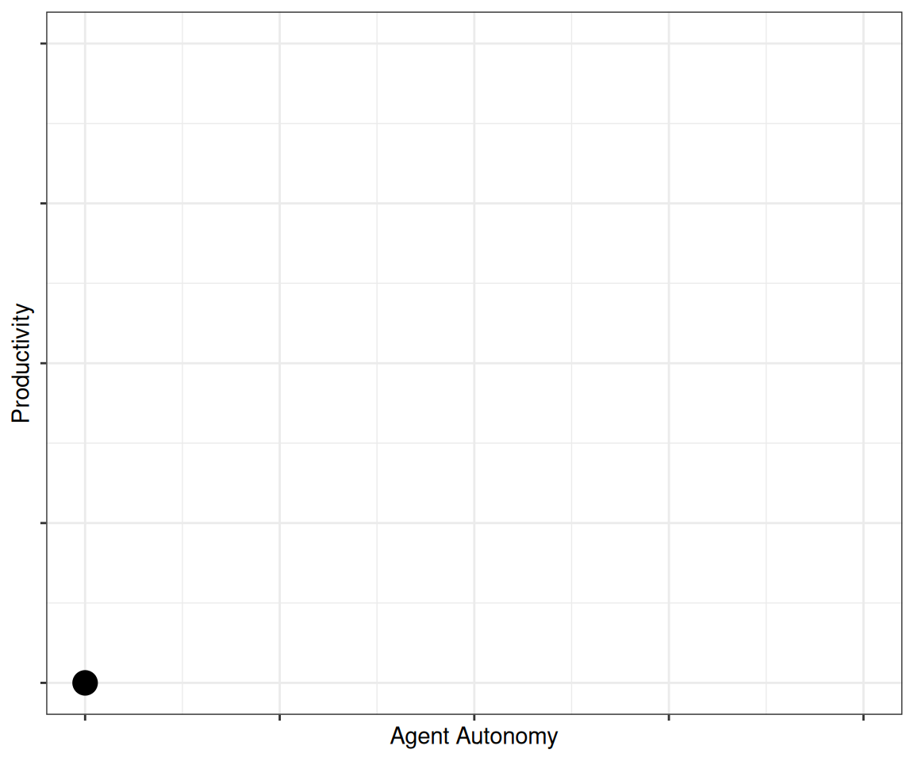
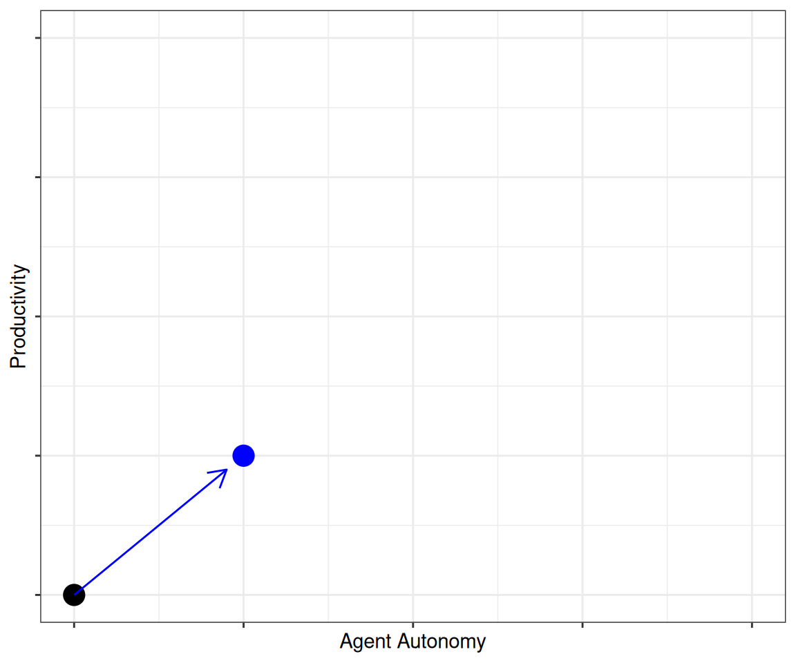
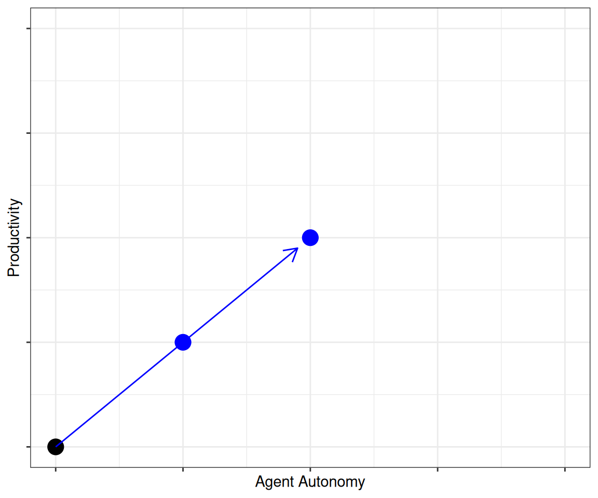
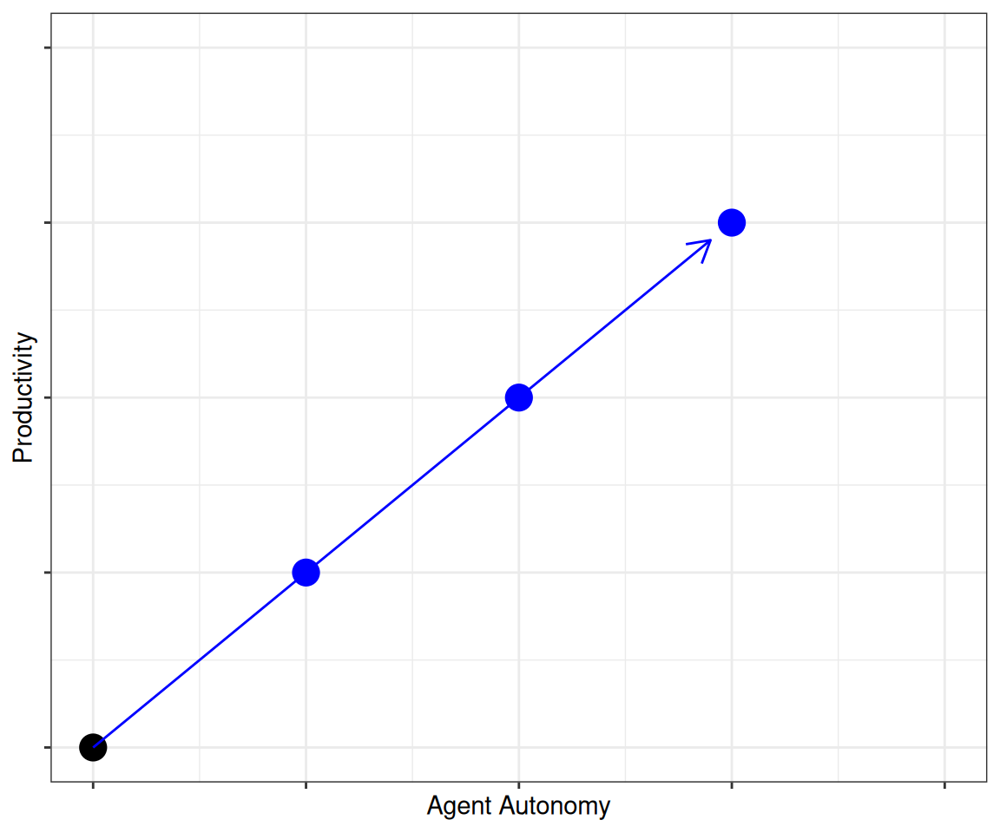
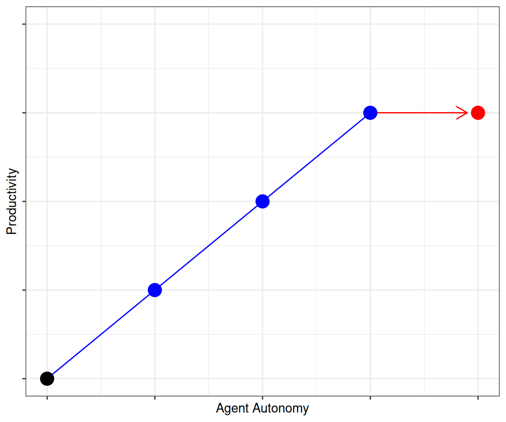
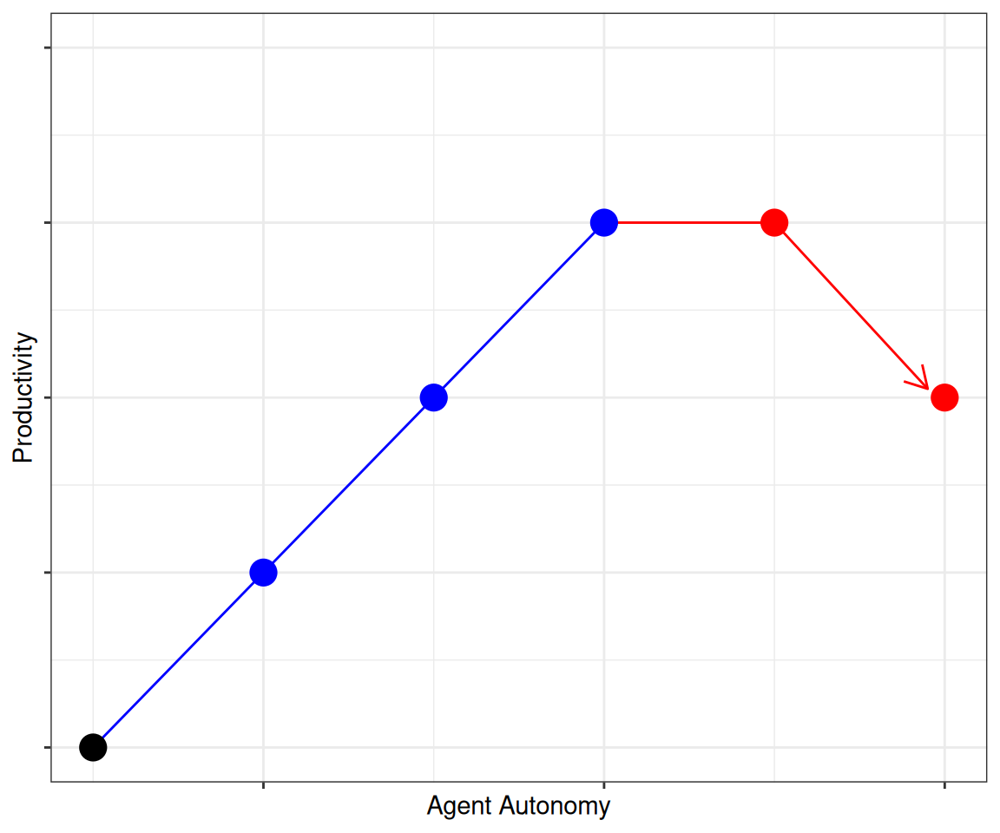
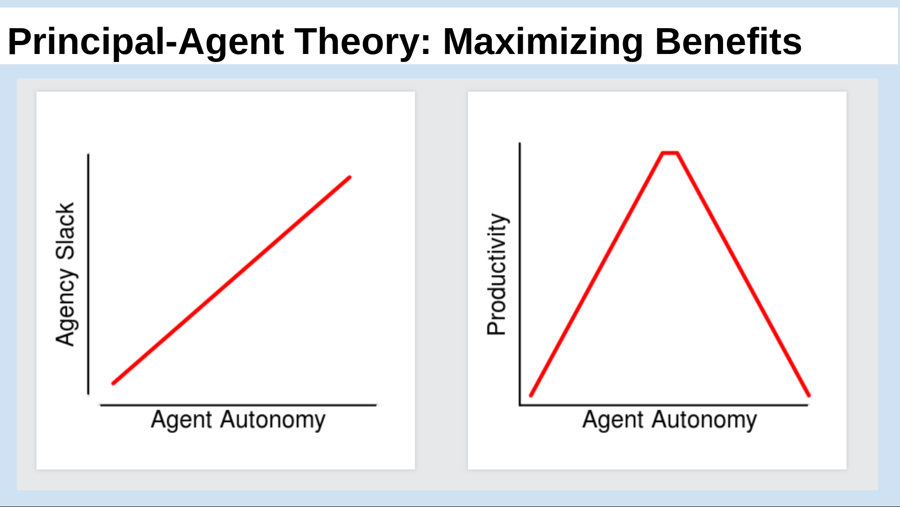
Principal-Agent Theory (Hawkins, Lake, Nielson & Tierney 2006)
Control Mechanisms
Rules vs Discretion
Monitoring and Reporting Requirements
Screening and Selection Procedures
Institutional Checks and Balances
Sanctions
Why would states delegate power to an external agent?
Hawkins, Lake, Nielson & Tierney (2006)
Because delegation is a limited action
Because delegation can provide substantial benefits
Because delegation can be designed to minimize agency slack
Why would states delegate power to an external agent?
Hawkins, Lake, Nielson & Tierney (2006)
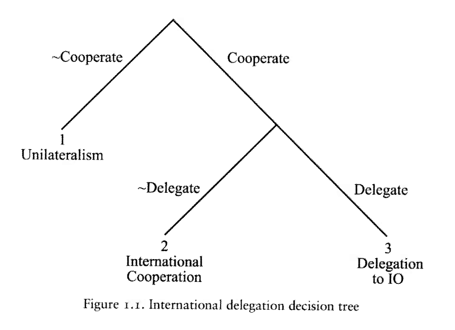
Analyzing the Design of the International Criminal Court
Read “Understanding the International Criminal Court” by the ICC Press Office,
Review the Rome Statute (founding treaty), and
Help us identify the design benefits and control mechanisms in the ICC